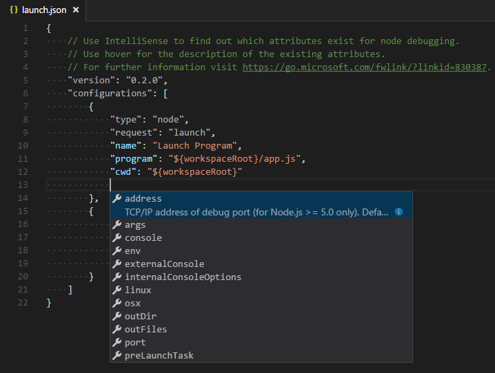

One of the key features of Visual Studio Code is its great debugging support. VS Code’s built-in debugger helps accelerate your edit, compile and debug loop.

Debugger Extensions
VS Code has built-in debugging support for the Node.js runtime and can debug JavaScript, TypeScript, and any other language that gets transpiled to JavaScript.
For debugging other languages and runtimes (including PHP, Ruby, Go, C#, Python, C++, Powershell and many others), please look for Debuggers extensions in our VS Code Marketplace.
Below are several popular extension which include debugging support:
Tip: The extensions shown above are dynamically queried. Click on an extension tile above to read the description and reviews to decide which extension is best for you.
Start Debugging
The following documentation is based on the built-in Node.js debugger, but most of the concepts and features are applicable to other debuggers as well.
It is helpful to first create a sample Node.js application before reading about debugging. You can follow the Node.js walkthrough to install Node.js and create a simple “Hello World” JavaScript application (app.js). Once you have a simple application all set up, this page will take you through VS Code debugging features.
Debug View
To bring up the Debug view, click on the Debugging icon in the Activity Bar on the side of VS Code.

The Debug view displays all information related to debugging and has a top bar with debugging commands and configuration settings.
Launch Configurations
To debug a simple app in VS Code, you simply have to press F5 and VS Code will try to debug your currently active file.
Tip: you can debug a simple app even in a no folder VS Code workspace but it is not possible to manage launch configurations and setup advanced debugging. For that you have to open a folder in your workspace.
Thus for advanced debugging you first have to open a folder and then set up your launch configuration file - launch.json. Click on the Configure gear icon on the Debug view top bar and VS Code will generate a launch.json file under your workspace’s .vscode folder. VS Code will try to automatically detect your debug environment, if unsuccessful you will have to choose your debug environment manually.
Here is the one generated for Node.js debugging:
|
Please note that the attributes available in these launch configurations vary from debugger to debugger. You can use IntelliSense to find out which attributes exist for a specific debugger. In addition, hover help is available for all attributes. If you see green squigglies in your launch configuration, hover over them to learn what the problem is and try to fix them before launching a debug session.
VS Code debuggers typically support launching a program in debug mode or attaching to an already running program. Depending on the request (attach or launch) different attributes are required and our launch.json validation and suggestions should help with that.
Review the generated values and make sure that they make sense for your project and debugging environment.
To add a new configuration to an existing launch.json use IntelliSense if your cursor is located inside the configurations array. Or just press the Add Configuration… button to invoke snippet IntelliSense at the start of the array. Or simply choose Add Configuration… option in the debug dropdown.
Select the configuration named Launch using the Configuration dropdown in the Debug view. Once you have your launch configuration set, start your debug session with F5. The other way to run your configuration is through Command Palette (⇧⌘P (Windows, Linux Ctrl+Shift+P)), by filtering on Debug: Select and Start Debugging or typing 'debug ', and selecting the configuration you want to debug.
Debug actions
Once a debug session starts, the Debug actions pane will appear on the top of the editor.

- Continue / Pause F5
- Step Over F10
- Step Into F11
- Step Out ⇧F11 (Windows, Linux Shift+F11)
- Restart ⇧⌘F5 (Windows, Linux Ctrl+Shift+F5)
- Stop ⇧F5 (Windows, Linux Shift+F5)
Launch.json attributes
There are many launch.json attributes to help support different debuggers and debugging scenarios. As mentioned above, you can use IntelliSense (⌃Space (Windows, Linux Ctrl+Space)) to see the list of available attributes once you have specified a value for the type attribute.

The following attributes are mandatory for every launch configuration:
type- the type of debugger to use for this launch configuration. Every installed debug extension introduces a type, e.g.nodefor the built-in node debugger, orphpandgofor the PHP and Go extensions.request- the request type of this launch configuration. Currently supported arelaunchandattach.name- friendly name which appears in the Debug launch configuration dropdown.
Here are some optional attributes available to all launch configurations:
preLaunchTask- to launch a task before the start of a debug session, set this attribute to the name of a task specified in tasks.json (located under the workspace’s.vscodefolder).internalConsoleOptions- control visibility of the Debug Console panel during a debugging sessiondebugServer- for debug extension authors only: connect to the specified port instead of launching the debug adapter
Many debuggers support some of the following attributes:
program- executable or file to run when launching the debuggercwd- current working directory for finding dependencies and other filesport- port when attaching to a running processstopOnEntry- break immediately when the program launchesconsole- what kind of console to use, e.g.internalConsole,integratedTerminal,externalTerminal.
Variable substitution
VS Code supports variable substitution inside strings in launch.json and has the following predefined variables:
- ${workspaceRoot} the path of the folder opened in VS Code
- ${workspaceRootFolderName} the name of the folder opened in VS Code without any slashes (/)
- ${file} the current opened file
- ${relativeFile} the current opened file relative to
workspaceRoot - ${fileBasename} the current opened file’s basename
- ${fileBasenameNoExtension} the current opened file’s basename with no file extension
- ${fileDirname} the current opened file’s dirname
- ${fileExtname} the current opened file’s extension
- ${cwd} the task runner’s current working directory on startup
- ${lineNumber} the current selected line number in the active file
You can also reference environment variables through ${env:Name} syntax (e.g. ${env:PATH}). Be sure to match the environment variable name’s casing, for example ${env:Path} on Windows.
|
You can also reference VS Code settings using ${config:NAME} syntax (for example: ${config:editor.fontSize}). Some debug extensions even introduce additional command variables that can be referenced as ${command:NAME}.
Run mode
In addition to debugging a program, VS Code supports running the program. The Run action is triggered with ⌘F5 (Windows, Linux Ctrl+F5) and uses the currently selected launch configuration. Many of the launch configuration attributes are supported in ‘Run’ mode. VS Code maintains a debug session while the program is running and pressing the Stop button terminates the program.
Please note: The Run action is always available, but not all debugger extensions support ‘Run’. In this case ‘Run’ will be the same as ‘Debug’.
Multi-target debugging
For debugging complex scenarios involving more than one process (e.g. a client and a server), VS Code supports multi-target debugging.
Using multi-target debugging is simple: after you’ve started a first debug session, you can just launch another session. As soon as a second session is up and running, the VS Code UI switches to multi-target mode:
- The individual sessions now show up as top level elements in the CALL STACK view.
- The floating debug widget shows the currently active session (and all other sessions are available in a dropdown menu).

- Debug actions (e.g. all actions in the floating debug widget) are performed on the active session. The active session can be changed either by using the drop down menu in the floating debug widget or by selecting a different element in the CALL STACK view.
An alternative way to start multiple debug session is by using a so-called compound launch configuration. A compound launch configuration lists the names of two or more launch configurations that should be launched in parallel. Compound launch configurations show up in the launch configuration drop down menu.
|
Breakpoints
Breakpoints can be toggled by clicking on the editor margin. Finer breakpoint control (enable/disable/reapply) can be done in the Debug view’s BREAKPOINTS section.
- Breakpoints in the editor margin are normally shown as red filled circles.
- Disabled breakpoints have a filled gray circle.
- Column breakpoints are shown inline in the editor
- When a debugging sessions starts, breakpoints that cannot be registered with the debugger change to a gray hollow circle. The same might happen if the source is edited while a debug session without live-edit support is running.
The Reapply All Breakpoints command sets all breakpoints again to their original location. This is helpful if your debug environment is “lazy” and “misplaces” breakpoints in source code that has not yet been executed.
A powerful VS Code debugging feature is the ability to set conditions either based on expressions or hit counts.
- Expression condition: The breakpoint will be hit whenever the expression evaluates to
true. - Hit count: The ‘hit count’ controls how many times a breakpoint needs to be hit before it will ‘break’ execution. Whether a ‘hit count’ is respected and how the exact syntax of the expression looks like depends on the debugger extension used.
You can add a condition and/or hit count either when creating the breakpoint with the Add Conditional Breakpoint action or with the Edit Breakpoint… action for existing breakpoints. In both cases an inline text box with a drop down menu opens where the expressions can be entered:
If a debugger does not support conditional breakpoints the Add Conditional Breakpoint action will be missing.
A column breakpoint can be set using ⇧F9 (Windows, Linux Shift+F9) or via the context menu during a debug session. Column breakpoint will only be hit when the execution reaches that column. This is particularly useful when debugging minified code which contains multiple statements on a single line.
Function breakpoints
Instead of placing breakpoints directly in source code, a debugger can support creating breakpoints by specifying a function name. This is useful in situations where source is not available but a function name is known.
A ‘function breakpoint’ is created by pressing the + button in the BREAKPOINTS section header and entering the function name:

Data inspection
Variables can be inspected in the VARIABLES section of the Debug view or by hovering over their source in the editor. Variables and expression evaluation is relative to the selected stack frame in the CALL STACK section.

Variables and expressions can also be evaluated and watched in the Debug view’s WATCH section.

Variable values can be modified with the Set Value action from the variable’s context menu.
Debug Console
Expressions can be evaluated in the Debug Console. To open the Debug Console, use the Open Console action at the top of the Debug pane or using the Command Palette (⇧⌘P (Windows, Linux Ctrl+Shift+P)). The Debug Console shows suggestions while typing. If you need to enter multiple lines, use Shift + Enter between the lines and then send all lines for evaluation with Enter.

Next Steps
To learn about VS Code’s Node.js debugging support, take a look at:
- Node.js - Node.js debugging is included in VS Code.
To see a tutorial on the basics of Node.js debugging, check out:
- Intro Video - Debugging - Introductory video showcasing the basics of debugging.
To learn about VS Code’s task running support, go to:
- Tasks - Running tasks with Gulp, Grunt and Jake. Showing Errors and Warnings
To write your own debugger extension, visit:
- Debuggers - Steps to create a VS Code debug extension starting from a mock sample
Common Questions
Q: What are the supported debugging scenarios?
A: Debugging of Node.js based applications is supported on Linux, Mac, and Windows out of the box with VS Code. Many other scenarios are supported by VS Code extensions available on the Marketplace.
Q: I do not see any launch configurations in the debug view drop down, what is wrong?
A: The most common problem is that you did not set up launch.json yet or there is a syntax error in the launch.json file. Or you might need to open a folder, since no folder debugging does not support launch configurations.